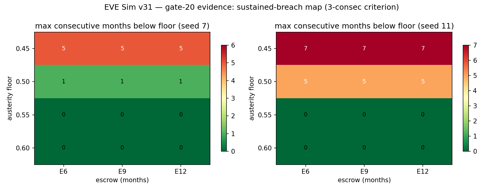

In plain language
July 11, 2026. Companion to RESULTS - v31.0 Austerity Floor & Escrow.
The question you were about to decide blind
The shake test (v16, two days ago) found that EDEN's storm survival depends on one contract term: how much sponsors keep paying during a recession. The verification audit then showed the safe threshold was blurrier than first reported — one test-world was fine at 50%, the other broke. That left you two candidate fixes to ratify between, with no evidence to choose by: raise the floor to 60%, or keep 50% and require a bigger security deposit (escrow). This run prices both, together, on the same committed storm.
The answer
Raise the floor. The deposit can't do this job — at all. We swept every combination of floor (45–60%) and deposit size (6, 9, 12 months). The deposit's effect on recession breaches was zero — not small, zero, to three decimal places. The reason is structural: a deposit pays out when a sponsor leaves (it bridges the hand-off gap, which it genuinely does well — that result stands). A sponsor who stays in their seat but underpays all winter never triggers it. Underpayment is a leak, month after month; a deposit is a bucket you get to pour once.
The floor, by contrast, works exactly as hoped: at 60% — and even at 55% — nobody misses essentials in either test-world. At 50%, one world shows a five-month gap for the poorest. So the real cliff edge sits between 50% and 55%, and ratifying 60% puts you one comfortable step back from it.
What to do with this
The gate-20 decision stops being a coin flip: require sponsors to contract for ≥60% of their obligations through recessions, and leave the deposit at its measured 6 months — deposits guard the door, the floor guards the winter. The alternative ("50% plus a deeper deposit") is now formally dead, with the receipts committed.
The honest catch
Same caveats as the shake test it extends: two test-worlds, stated dials, and a sponsor who underpays but stays. The threshold's exact position inherits those assumptions; the structural finding — deposits can't substitute for commitment — doesn't.
One line: a bigger deposit can't buy back a smaller promise — raise the recession floor to 60% and keep the deposit for what it's actually for.
Figures

Technical results
Run: July 11, 2026. Spec: v31 SPEC - Austerity Floor & Escrow (registered).md — bars AB0–AB5 fixed before code. Engine: austerity_escrow_sweep.py (sweeps the committed v6.8 run_fed as committed, v16's exact path and storm; deterministic; seeds 7+11; batched partials + assemble). Committed: results_v31.json, fig_v31_austerity_escrow.png. Decision-support for DR-14's gate-20 re-ratification. Every number traces to results_v31.json.
Verdict in one line: the re-ratification question is answered clean — candidate A wins and candidate B is dead: a 0.60 austerity floor holds delivery in both seeds at the committed 6-month escrow (troughs 1.06–1.09), while at a 0.50 floor no swept escrow depth (6, 9, or 12 months) prevents the seed-11 sustained breach — because escrow turns out to be almost perfectly inert against austerity (identical breach profiles at every depth, troughs move ≤0.001): escrow pays out at exits, bridging the step-up lag, and a sponsor underpaying every month of a recession never triggers it. Bonus precision: floor 0.55 also holds both seeds, so the measured hold-line is in (0.50, 0.55] — ratifying ≥0.60 buys a half-step of margin above the measured edge.
Bar summary (all six pass; AB3/AB4's registered UNCERTAINs resolved negative — the finding)
| Bar | Registered | Measured | Result |
|---|---|---|---|
| AB0 regression anchor | E=6 column reproduces v16's committed isolation slices exactly, both seeds | exact (months_below, max_consec, troughs to 1e-9) | PASS |
| AB1 frontier monotone | higher floor / deeper escrow never worsens | monotone everywhere (escrow's effect ≈ 0) | PASS |
| AB2 candidate A | floor 0.60 @ escrow 6: no sustained breach, either seed | 0 months below in both seeds (troughs 1.088 / 1.062) | PASS — candidate A priced and clean |
| AB3 candidate B | minimal escrow E′ at floor 0.50 holding both seeds | none — E′ does not exist at any swept depth (s11: 6 months below, max-consec 5, at E=6, E=9, and E=12) | PASS (descriptive) — the finding: candidate B is dead |
| AB4 below the floor | any escrow rescue at 0.45? | none (11–12 months below at every depth) | PASS (descriptive) — escrow does not substitute for commitment |
| AB5 no-print invariant | zero EVE printed, all 24 cells | 0.0 | PASS |
Findings
F1 — Escrow is the wrong tool for austerity (the mechanism, and the run's core lesson). Across the entire grid, deepening escrow from 6 to 12 months changes the breach profile by nothing (max-consec identical in every cell; p10 troughs move by ≤0.001). The committed v6.8 escrow is severance machinery: it advances a member's missed obligations at exit and bridges the 6-month step-up lag. A sponsor who stays in the federation while paying 45–50% of obligations through a recession never trips it — the shortfall is a flow problem, month after month, and escrow is a stock answer sized for transitions. v16's F2 already said "price the austerity floor, not just the exit lag"; v31 sharpens it: the austerity floor and the escrow are not substitutes at any priced depth — the floor must carry itself. (This kills the "≥50% + escrow sized to the residual gap" variant Verification v4 floated as candidate B: at these dials there is no such sizing ≤ 12 months.)
F2 — The hold-line is (0.50, 0.55], and 0.60 buys real margin. Floor 0.55 holds delivery in both seeds (troughs 1.03–1.04); 0.50 breaches on seed 11 (5 consecutive months); 0.45 breaches on both seeds. So the true breach threshold sits between 0.50 and 0.55 — tighter than the (0.45, 0.60) bracket the committed v16 slices gave — and a ≥0.60 contract floor stands one half-step above the measured edge with troughs comfortably above 1.0. Recommendation for DR-14: ratify gate-20 at ≥0.60 (margin over the measured 0.55 hold-line, robust in both seeds), and retire the escrow-compensation variant with this run as the reason.
F3 — What escrow is still for (so nobody over-corrects). Nothing here weakens the v6.8/E*=6 result: escrow ≥ the step-up lag remains load-bearing for exits (v6.8 J3a: E=0 → 4 months below floor at a storm exit). The design consequence is a clean division of labor: escrow prices departures; the austerity floor prices commitment while staying. Contracts need both, at their own measured levels — 6 months of escrow, ≥60% recession payments.
Honest limits
Same reduced form and dials as v16 (this is deliberately v16's machinery pointed at two dials jointly); the 0.55 hold-line is a two-seed result on the committed storm, not a distributional statement — the ordering (floor decisive, escrow inert against austerity) is structural, the exact threshold inherits v16's dial-dependence. Escrow depths beyond 12 months were not swept (registered grid); nothing suggests 15+ would behave differently given the zero gradient from 6→12, but that extrapolation is stated, not measured. The sponsor here underpays but stays; a sponsor who underpays and then exits compounds the two channels — v6.8's storm cell covers that composition at the committed dials.
Plain language
Two fixes were on the table for the "sponsors must keep paying in a recession" rule: raise the required share from 50% to 60%, or keep 50% but make sponsors post a bigger security deposit. We priced both. The deposit idea simply doesn't work — a deposit pays out when someone leaves, and a sponsor who stays-but-underpays never touches it; doubling the deposit changed nothing at all, in any scenario. Raising the floor works: at 60% (and even 55%) the poorest never miss essentials in either random world; at 50% one world shows a five-month gap. So the recommendation is the simple one: 60% floor, deposit unchanged — the deposit guards the door, the floor guards the winter.
Run and written July 11, 2026 by the Fable 5 verification session (post-Verification-v4 evidence run, owner-directed). Spec registered before code; AB3/AB4's registered expectations resolved as negative findings, bars unmoved. REPRODUCES: assemble is deterministic from committed partials; cells regenerate from the committed v6.8 engine.
Raw data